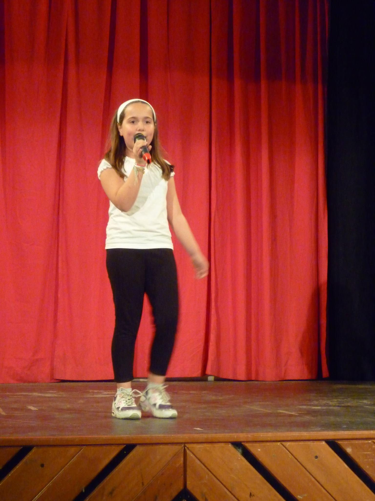
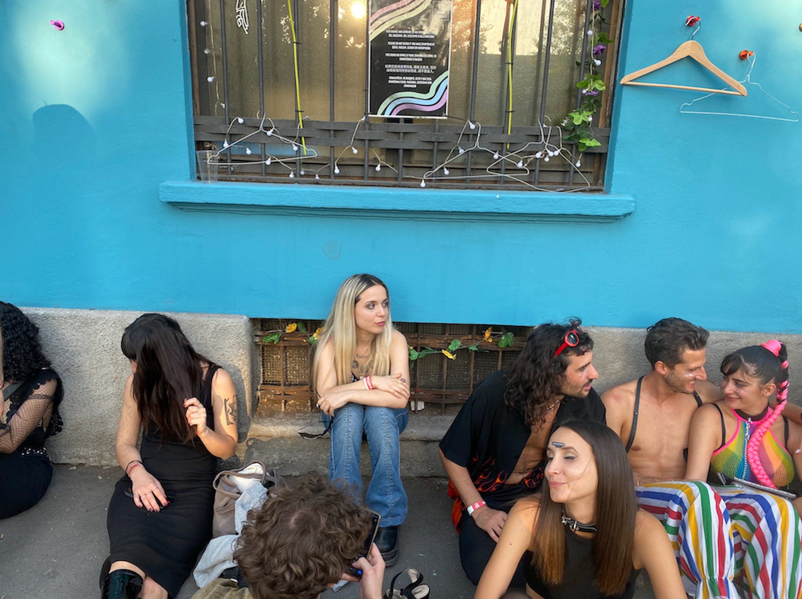
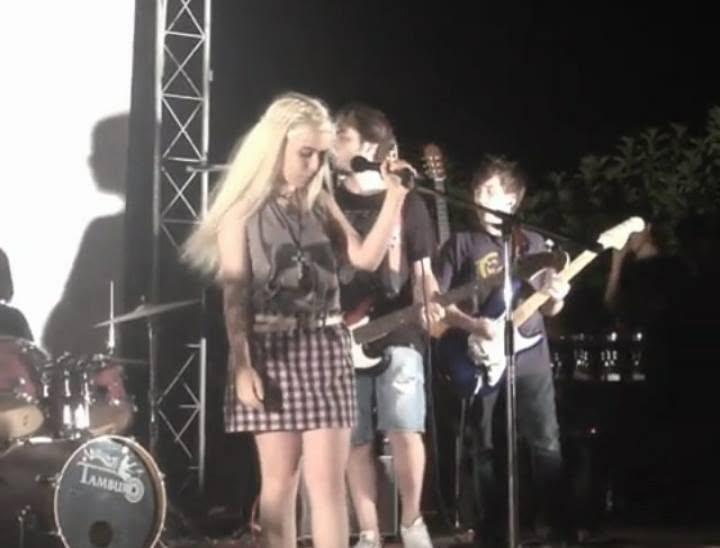
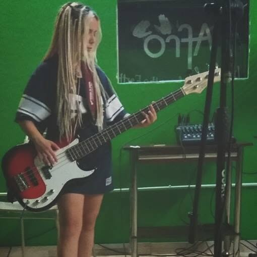
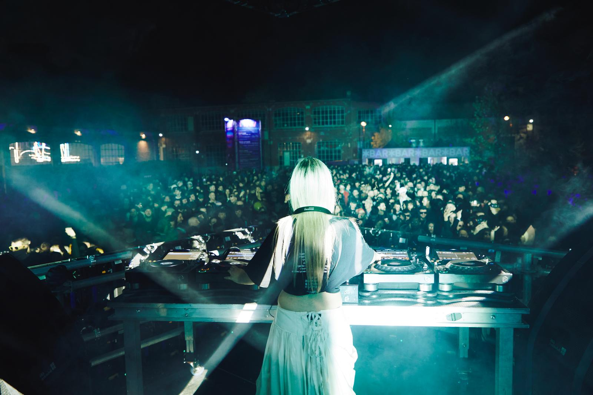
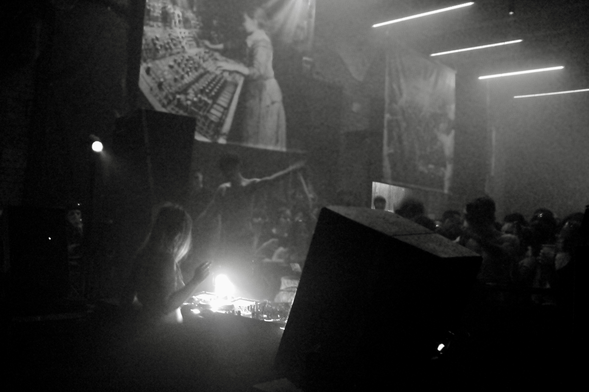

1. Oggi che la scena è sempre più compromessa e difficile per le persone che non hanno alle spalle contatti o budget, hai scelto di prendere e partire per Milano provando a realizzare i tuoi sogni. Raccontaci chi eri prima di diventare Dolce Potente.
Mi chiamo Rita e sono l'ultima di cinque figli, tutti maschi. Sono cresciuta in una famiglia molto umile del sud Italia.
Parlo di femminismo, ma la verità è che conosco molto meglio la fratellanza della sorellanza. Ho iniziato a vivere da sola la strada a 6 anni, dalla via di casa al quartiere, fino a tutta la città.
A scuola ero la secchiona che faceva troppe domande. Cercavo un'emancipazione culturale, ma allo stesso tempo mi sentivo a casa nella spontaneità della gente "terra terra".
Ho sempre voluto fare musica. Da bambina tutti i miei giochi erano microfoni, palchi immaginari e chitarre finte. Mio padre ha una voce straordinaria, ma la vita, a un certo punto, gli ha impedito di continuare a cantare. Mia madre, invece, con sacrificio, mi ha permesso di frequentare per 4 anni una scuola di musica pomeridiana. È uno dei doni più grandi che abbia mai ricevuto.

Sono cresciuta in un contesto di precarietà culturale. Con il tempo ho cercato di lavorare con chiunque, a Bari, potesse insegnarmi qualcosa di questo mestiere, ma raramente ho trovato la professionalità che desideravo incontrare.
Il mio nemico più grande, però, non erano gli altri.
Era la convinzione di non essere abbastanza capace. La paura che quella precarietà, quella mancanza di qualità che vedevo intorno a me, finisse per definire anche me.
Con questa gabbia addosso sono partita per Milano.
"Il mio nemico più grande, però, non erano gli altri. Era la convinzione di non essere abbastanza capace."
2. Come ti sei sentita i primi momenti a Milano? Cosa ti ha dato questa città?
Quando sono arrivata a Milano frequentavo ancora l'università a Bari. Tornavo giù per dare gli esami durante la sessione.
La verità è che non avevo niente da perdere. Per me restare giù avrebbe significato morire lentamente dentro.
Appena arrivata facevo come lavoro la babysitter in inglese per una bambina di famiglia molto ricca.
L'emozione di ricominciare da zero, di potermi costruire e raccontare come una persona nuova, era indescrivibile.
Milano mi dava la sensazione che tutto fosse possibile. Ero circondata da opportunità, da persone, da stimoli. Ma insieme a quell'entusiasmo c'era anche una grande insicurezza: non avevo idea di come raggiungere quelle possibilità, di quale fosse il percorso, di quali porte bussare.
Io ero arrivata senza conoscenze, senza agganci. Volevo soltanto cambiare direzione, cambiare le probabilità della mia vita. Però, all'inizio, la strada sembrava un vicolo cieco.
Abitavo tra Barona e Famagosta. Vivevo la periferia di Milano. Da una parte c'erano mille esperienze nuove; dall'altra iniziavo a rendermi conto che molte di quelle opportunità avevano anche un carattere elitario.
D'altra parte, senza che me lo aspettassi, ho sentito tantissima nostalgia di casa. Ho iniziato a vedere tutti gli aspetti belli del Sud che avevo sempre dato per scontato.
Ma comunque non sarei mai tornata indietro.
3. Sappiamo che il tuo incontro con il Tempio del Futuro Perduto è stato importante: perché? Cosa hai trovato lì di diverso?
Penso di aver avuto un colpo di fulmine.
Ho attraversato il portale, sono entrata nell'agorà, l'ho superata. Poi ho visto una libreria. E lì ho capito tutto.
Per tutta la vita ero stata la secchiona tra i ragazzi di strada. Ho sempre vissuto questi due mondi come se fossero incompatibili.
Al Tempio, invece, li ho visti convivere. Ho scoperto che il divertimento e l'impegno culturale non erano due opposti, ma potevano essere la stessa cosa. Anzi, che il divertimento stesso potesse essere uno strumento di emancipazione culturale.
È stata la prima volta in cui ho pensato: esiste un posto che guarda il mondo come lo guardo io.

Un'altra cosa che mi ha colpito è stata la professionalità. Era uno spazio nato dal basso, aperto a tutti, eppure ogni cosa trasmetteva cura, competenza e ambizione. Fino a quel momento avevo quasi interiorizzato l'idea che ciò che nasce dal popolo dovesse accontentarsi di essere improvvisato, come se essere accessibili significasse inevitabilmente essere poco professionali. Il Tempio mi ha dimostrato il contrario.
Ma soprattutto il Tempio ha distrutto la gabbia mentale che mi ero costruita addosso.
Lì mi sono messa in gioco facendo di tutto. E, facendolo, ho scoperto una cosa semplicissima ma rivoluzionaria: ero capace anche io.
Credo che il Tempio abbia cambiato, prima ancora della mia carriera, il mio approccio all'esistenza. Da quel momento ho smesso di chiedermi se fossi abbastanza e ho iniziato a chiedermi solo come imparare a fare le cose.
4. Come è nata Dolce Potente?
Dolce Potente è nata nello stesso periodo in cui mi sono avvicinata alla musica elettronica. Mentre imparavo questo nuovo linguaggio, sentivo il bisogno di dare un nome anche a tutto quello che stavo diventando.
Per me Dolce Potente è una figura cyborg, figlia di una generazione che fa fatica a immaginare il futuro. Per questo prende pezzi del passato, soprattutto le diverse iconografie femminili, e prova a ricomporle in qualcosa di nuovo. Cerca di non essere un personaggio nostalgico: ma più una "patchwork girl" che usa le positività delle varie epoche per creare una figura perfetta capace di essere la risposta al nuovo mondo. Che ambizione.
Ma prima di tutto Dolce Potente sono io.
L'ho chiamata così perché rappresenta il mio essere un ossimoro. Ho sempre avuto dentro due anime che sembravano incompatibili: la dolcezza e la forza, la fragilità e l'aggressività. E questa contraddizione si riflette naturalmente anche nella mia musica, dove convivono suoni duri e melodie, urla e canto, hard e soul.


In fondo è sempre stato così. Ancora prima della techno avevo una band alternative rock con gli amici, ma allo stesso tempo cantavo swing degli anni '50 con la mia scuola di musica. Passavo da un mondo all'altro con la massima naturalezza.
Solo dopo ho capito che non dovevo scegliere una sola identità: la mia forza era proprio tenerle tutte insieme.
5. Il successo del primo disco: Bambola viene cantata nei dancefloor di mezza Europa; migliaia di ascolti e le prime date in Italia e all'estero. Ti aspettavi che tutto succedesse così velocemente?
No, assolutamente. È successo tutto in modo molto spontaneo. Sia il testo, nato dopo aver finito di guardare Sisters with Transistors, sia la musica di Industrial Romantico sono venuti fuori in maniera naturale.
Non avevo davvero idea che il brano avrebbe funzionato così bene. Ricordo ancora il momento in cui ho registrato la voce: poi Industrial Romantico è entrato in studio, ha premuto play per ascoltare quello che avevo fatto e, dopo le prime parole, "tu mi fai girar, tu mi fai girar", ha fermato tutto. Ci siamo guardati e, senza dirci niente, abbiamo capito entrambi che c'era qualcosa di speciale.
La cosa più incredibile è stata sentirla cantare anche dagli italiani a Tianjin, durante il Tempio China Tour.


6. Oltre alla musica e a insegnare il djing alle nuove generazioni tramite Scuola della Techno, sei una militante attiva di diverse lotte. Puoi raccontarci di più sulla tua visione techno/politica?
Sì. Premetto che, mentre studiavo alla Scuola della Techno, ho avuto modo di approfondire tantissimo i contesti socio-culturali e politici in cui la techno si è sviluppata. Quello che dico, quindi, non è una mia interpretazione personale, ma qualcosa che appartiene oggettivamente alla storia di questa musica.
La techno è un linguaggio politico, sia per il motivo per cui è nata, sia per la sua struttura stessa. Crea comunità, unione, supera le definizioni e non ha bisogno di strutture rigide.
Una cosa che ho trovato molto interessante è stata poter cantare dei messaggi politici sulla techno. È una musica che normalmente comunica attraverso il suono, senza parole, e proprio per questo ho sentito il desiderio di usare la voce per rendere esplicito un messaggio che la techno ha sempre portato dentro di sé.
«La techno è un linguaggio politico, sia per il motivo per cui è nata, sia per la sua struttura stessa.»
La techno, appunto, è uno strumento. Non avendo una struttura definita, puoi darle il messaggio che vuoi trasmettere attraverso i suoi ritmi, che arrivano alla pancia, alle masse. Sono ritmi oltre la polis, ritmi ancestrali, che parlano all'animo umano a prescindere da chi sei. Ed è proprio per questo che è uno strumento così potente e, forse, anche per questo viene così spesso osteggiato e represso.
Per me, poi, che venivo da un passato come cantante, in cui avevo la sensazione che se non parlavi delle solite quattro cavolate non potessi andare avanti, la techno è stata una liberazione. Mi ha ridato la libertà e la voglia di esprimermi davvero.
7. Progetti per il futuro?
Da circa un anno ho iniziato a produrre in autonomia, grazie agli insegnamenti di Sono Distorto e al supporto del Tempio.
Al momento mi sto concentrando interamente su questo: finalmente riesco a tradurre in musica le mie visioni.
Sto riversando nelle mie tracce tutto ciò che ho assimilato in questo percorso, esplorando anche le radici folkloristiche della mia cultura d'origine, il tarantismo e la dimensione tribale della lingua, con l'obiettivo di utilizzare la techno per dare voce alla "Questione Meridionale".
Come ho già espresso, non posso replicare il modello Detroit o berlinese: devo usare lo strumento della techno per raccontare i contesti che ho vissuto in prima persona e le dinamiche che conosco da vicino. È fondamentale per me impiegare questo linguaggio per dar voce alle lotte che mi appartengono. Replicare ciò che è stato fatto a Detroit senza una rielaborazione personale si ridurrebbe a un'appropriazione sterile, priva di innovazione.
A tutto ciò si affiancano il mio impegno costante nella comunità del Tempio e i numerosi progetti legati alla Scuola della Techno.
Credo sia fondamentale far crescere sempre di più questo percorso, presentandomi come una testimonianza viva del suo valore e del suo successo: un percorso che mi ha portata fino a suonare in Cina e nei club di punta del panorama europeo.
